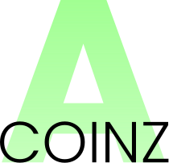

"Der Zweck für ein zentralisiertes Finanzsystem ist nicht Menschen auszubeuten, sondern Stabilität in der Gesellschaft zu gewährleisten."
- Abhijit Naskar
und
Zentralisiertes Blockchain kann eine große Bereicherung für die Gesellschaft sein, während ein dezentralisiertes Blockchain nur für Chaos und Zerstörung sorgt."
- Abhijit Naskar
haben dieses Projekt inspiriert
Acoinz ist eine Kryptowährung. Sie unterscheidet sich von anderen in mehreren Dingen: Sie basiert auf einem Netzwerk mit Zentrum. Die Einheit besteht aus generierten Nonces selber. Der Algorythmus für das Hashen ist absichtlich knackbar. Die Nonces speichern Ihren Erschaffer. Durch das zentralisierte Netzwerk ist die Währung koordiniert und es ist nicht möglich Netzwerkteilnehmer zu Betrügen, indem man sich fremde Nonces zuschreibt. Der Server speichert alle Aktivitäten und stellt diese öffentlich zur Verfügung. Nonces können entweder selbst generiert oder von anderen Workers (Netzwerkteilnehmern) erhalten werden. Ein Nonce entspricht einem Acoin. Sobald ein Nonce generiert wurde muss man diese für sich beanspruchen. Das funktioniert folgendermaßen:
Hier ist der Download zu einer simplen Version eines Acoinz miners. Der miner arbeitet sehr langsam. Eine schnelle Version des Miners ist nicht offiziell veröffentlicht. Das Programm arbeitet in JavaScript. Falls es nicht möglich ist, eine Software herunterzuladen, kann auch der online Miner verwendet werden. Dieser ist jedoch wesentlich langsamer und erfordert mehr Leistung.
Um die Existenz des Acoinz zu gewährleisten müssen einige Regeln festgelegt werden:
Hier ist die Dokumentation des Registrierungssystems zu finden. Das Dokument steht als PDF Datei zur Verfügung und beschreibt genau, wie Acoinz generiert und bestätigt werden können. Sie geht dabei auf technische Funktionsweisen des Servers ein.
Offizielle Dokumentation des Acoinz.
Verfügbar unter Betriebssystemen mit graphischer Benutzeroberfläche